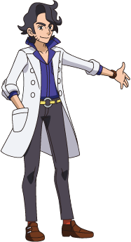
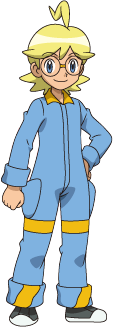
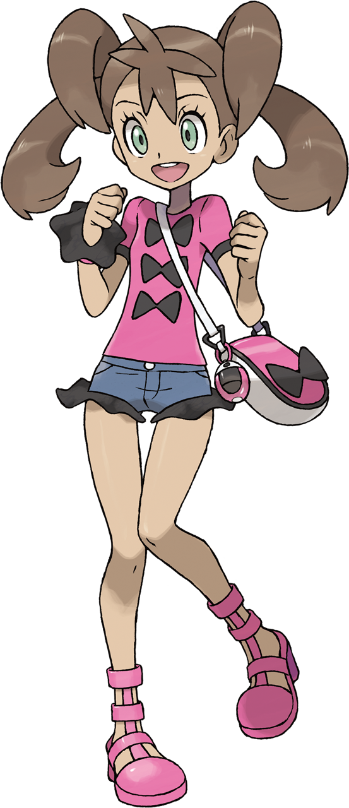
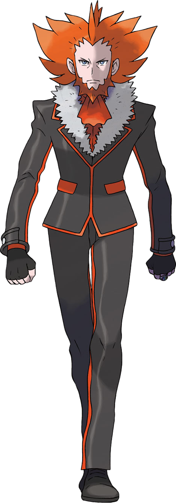

The characters
Throughout Kalos, Ash has met friends and foes alike. Use the menu to be sent to a specific character or keep scrolling to read them all.
Please note that this is not an extensive list of characters which appear in Kalos. Only prominent characters have been featured in this list. The full list of characters can be found on the wiki.
The list will also not feature any cameos from past regions, only characters new to Ash's journey.
Professor Sycamore

Professor Sycamore is the professor of the Kalos region. He researches the phenomenon of Mega Evolution, which allows certain Pokemon to temporarily evolve to a stronger state. He also sets out new trainers on their journey throughout the Kalos region with their first Pokemon and a Pokedex.
Professor Sycamore first meets Ash, Clement and Bonnie when they brought an injured Pokemon to his lab in Lumiose City. He soon then gave Serena her first Pokemon to set her off on her journey.
Serena
Serena is a new trainer who sets out to become a Pokemon Performer. She actually didn't first meet Ash in the Kalos region, but instead back in Kanto during one of Professor Oak's Pokemon camp. She had gotten lost in the forest and injured her knee when Ash found her. He told her to never give up when it gets hard and helped her back on her feet. Years passed and Ash arrived in Kalos. Serena recognised Ash on television and left her hometown of Vaniville Town to begin her Pokemon journey, and to reunite with Ash.
Serena's mother is a famous Rhyhorn rider, and wanted Serena to follow her path. However, she didn't particularly want to become a Rhyhorn rider so upon beginning her Pokemon journey, she decided to become a Pokemon Performer to entertain everyone in a different way. Throughout Serena's journey, she makes a friendly rivalry with another new trainer, Shauna, who is also a new Pokemon Performer.
Once Ash completed the Kalos league, Serena decided she wanted to keep entertaining lots of people and keep improving as a Pokemon Performer. She then left the group and set her sights to the Hoenn region to participate in Pokemon Contests by herself.
Clemont

Clemont is the leader of the Lumiose City gym and specialises in electric type Pokemon. He first meets Ash when he got ejected from the Gym by Clembot, a stand-in robot that Clemont made so that he would have more time to work on his inventions. Unfortunately, Clembot went haywire and kicked Clemont out of his own gym. Clemont, Bonnie (his younger sister), and Ash are eventually able to retake control over the gym. Once Clemont reprograms Clembot to properly work as intended, he joins Ash in his journey to learn about his battle techniques.
Clemont has an exceptional mind and makes a lot of different inventions that may or may not combust on him. Even though his inventions may not work all of the time, Ash is still extremely impressed at the technicality of it all.
After Ash's journey in Kalos has completed, Clemont had one last battle against Ash to end his journey off like how they begun it. Once Ash leaves for the Kanto region, Clemont remains in Kalos and continues to manage the Lumiose City gym as well as inventing new things.
Bonnie
Bonnie is Clemont's younger sister and an aspiring Pokemon trainer. She first meets Ash when he got ejected from the Lumiose City gym and managed to catch Pikachu before hitting the ground. As Clemont is Bonnie's guardian, she follows Ash and his friends around the Kalos region too.
Although Bonnie is still too young to become a Pokemon trainer yet, she still owns a Dedenne and looked after an unknown Pokemon which she named "Squishy". Throughout the journey, she also makes a number of advances on women, asking them to take care of her older brother, Clemont, to his dismay.
At the conclusion of Ash's Kalos journey, she was saddened to see him go. However, she made a promise that once she got older and could begin her own pokemon journey, she would battle Clemont in a full on battle.
Tierno

Tierno is a rookie Pokemon trainer from Santalune City and a rival of Ash in the Kalos region. Tierno, and his friends Trevor and Shauna, first meets Ash when they helped him find Bonnie who had gotten lost in a race. Although he is a rival to Ash, he is found to be encouraging his friends to do their best.
Tierno made it to the quarterfinals and lost against Sawyer. Despite his loss, he still stayed around to watch the rest of the battles. He remains in the Kalos region at the end of his journey to assist Professor Sycamore with the destruction which Team Flare caused.
Alain
Alain is another of Ash's rivals in the Kalos region. He aims to defeat all Mega Evolved Pokemon with his Mega Charizard X. Originally, he learnt how to Mega Evolve from the villanous Team Flare, and continued to work for them throughout his journey until finding out their true intentions. He comes across Ash during one of his battles, and was intruigued with Ash-Greninja. After learning that this phenomenon was not Mega Evolution and something totally different, he aimed to join the Kalos league to battle Ash at his strongest.
When it was found that Alain had been used by Team Flare to collect the energy from Mega Evolution, he betrayed them and aimed to take them down. Once Team Flare had been taken down, he aimed to travel around the Kalos region in search for Mega Stones and Key Stones, items which are crucial to pulling off Mega Evolution.
Shauna

Shauna is another new Pokemon trainer from Vaniville Town who aims to become a great Pokemon Performer, and is a rival to Serena. Shauna helped inspire Serena with what sort of a journey she wanted to take, convincing her to become a Pokemon Performer. Her goal is to become the Kalos Queen.
Despite wanting to become Kalos Queen, she fails to reach that goal during her journey, only losing out to Serena who lost to the reigning Kalos Queen. After the events of Team Flare take place, she assists Professor Sycamore with the clean up in Lumiose City.
Team Flare

Team Flare is the villanous team in the Kalos region. Their aim is to use the energy harnessed from Mega Evolution to start the world anew. Throughout Ash's journey, they thwart most of their plans by either destroying machinery or keeping Pokemon out of their hands. One of these Pokemon, "Squishy", is in fact one of the forms for the legendary Pokemon, Zygarde. Their plan was to use the legendary Pokemon to slowly destroy the region.
The leader of Team Flare is Lysandre, the owner of the company Lysandre Labs which created the Holo Casters, a device which would let people communicate through holograms.
Luckily, Ash and his Pokemon were able to prevent Team Flare from controlling Zygarde and destroying the region. The team disbanded once all of the admins were captured. In the aftermath of the destruction, a Pokemon Performance was held by Serena and Shauna to cheer up the residents of the region. Professor Sycamore also attemped to recapture some wild Pokemon which ran loose after the incident.